.jpeg)
Графический дизайнер
Обо мне 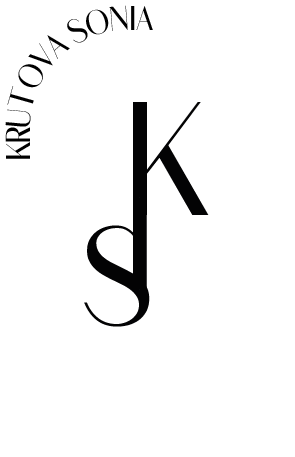
Я - Крутова Софья профессиональный дизайнер-разработчик по компьютерной графике. Помогу Вам создать уникальный стиль компании: логотип, баннеры, визитки, веб-баннеры, меню, афиши, иллюстрации, презинтации, наклейки и др.
Фирменный стиль - это собственное представление о себе и своей сферы работы. Поэтому для каждого человека я подбераю свой стиль, дизайн и цвета. Дизайн - это моё вдохновление и любовь. Именно поэтому каждый мой дизайн выполненно совершенно по разному.
Мои работы


.png) 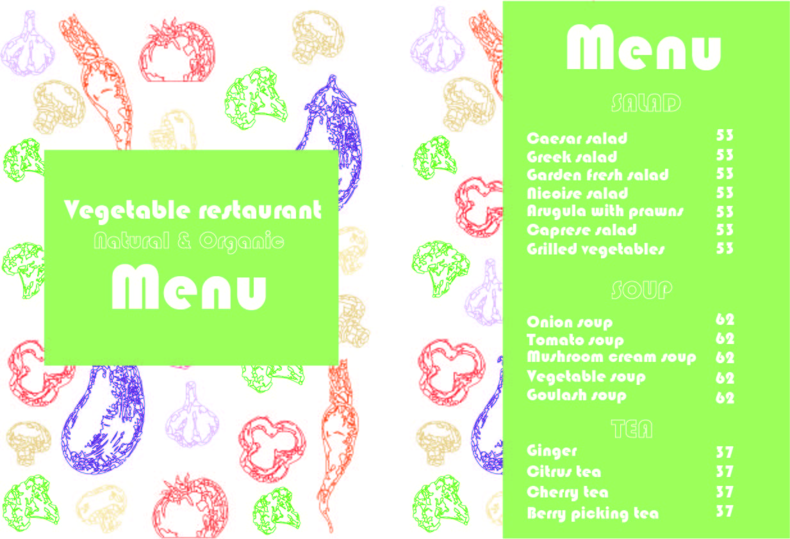
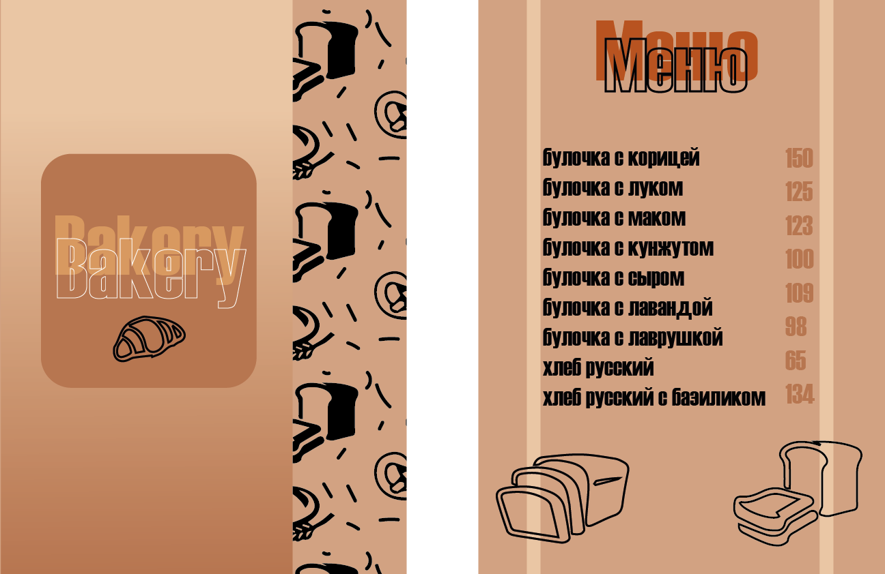
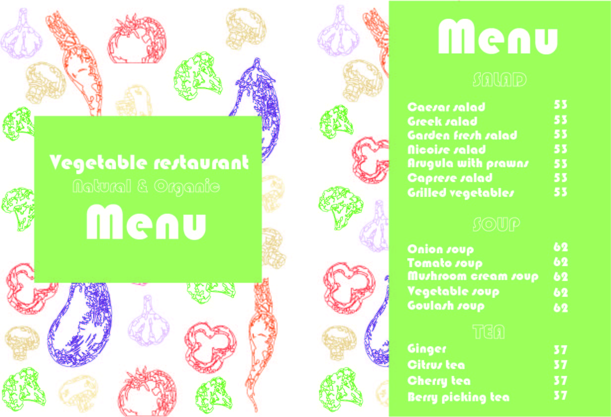
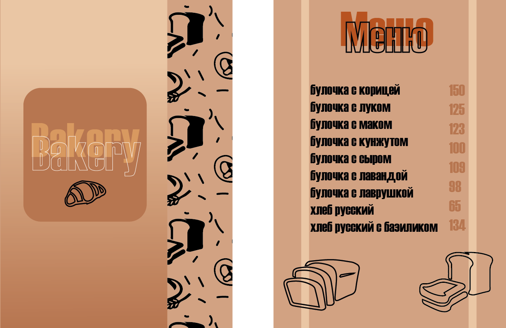
.png) 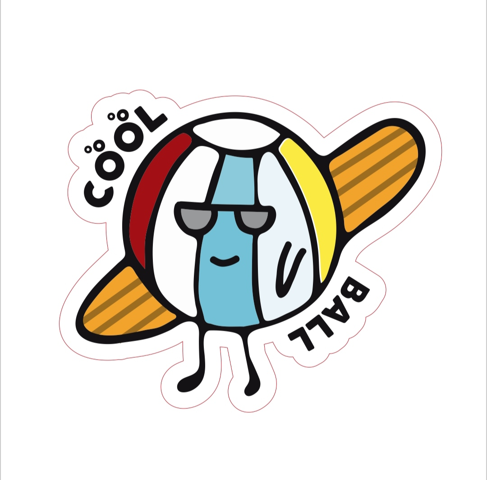
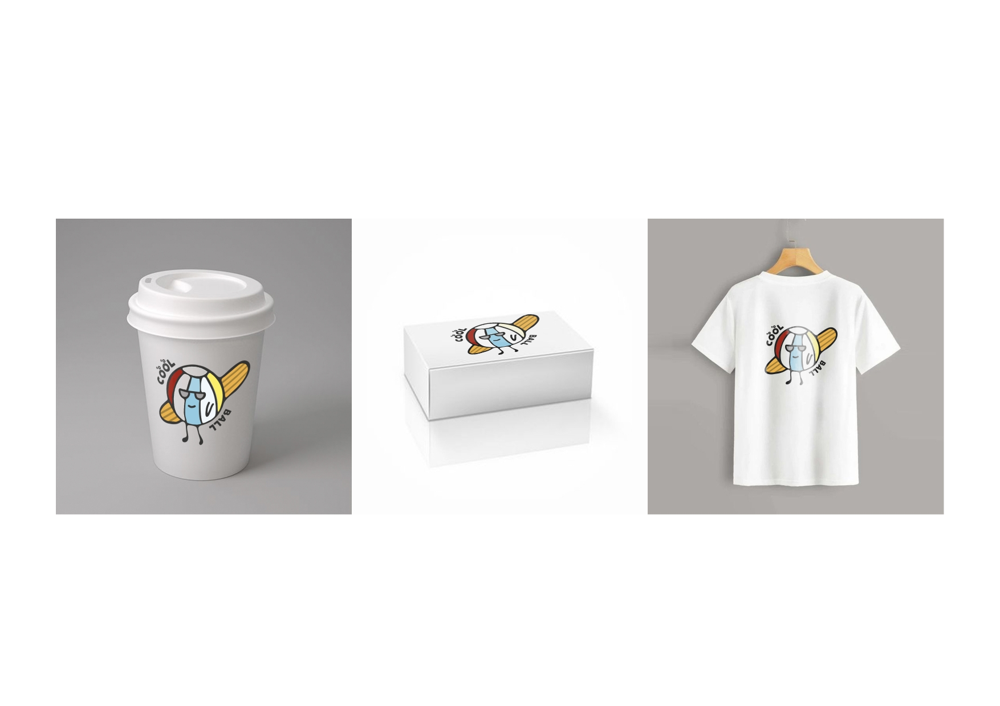
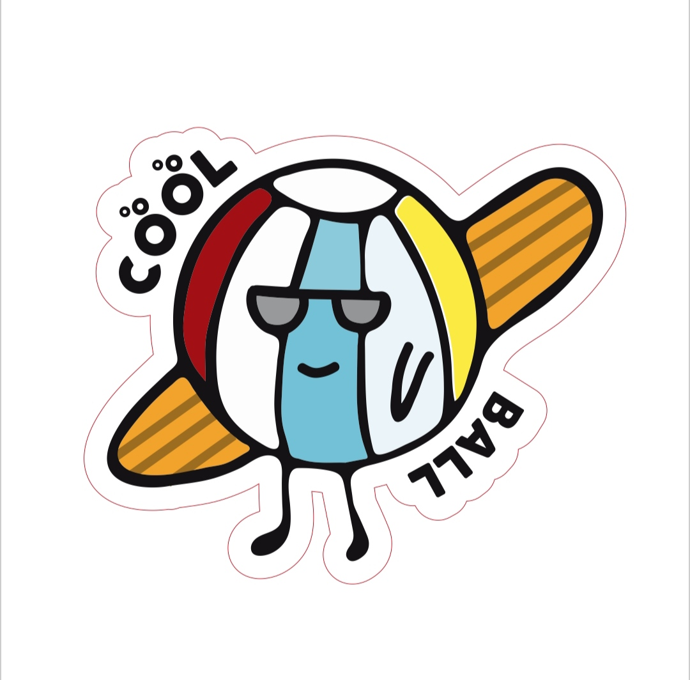
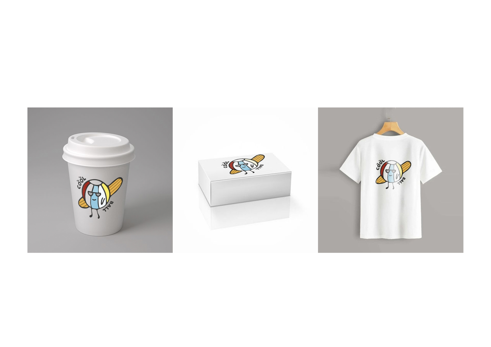
 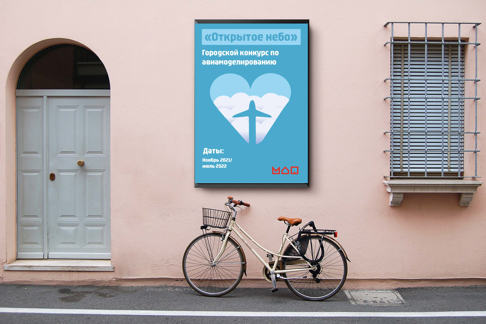
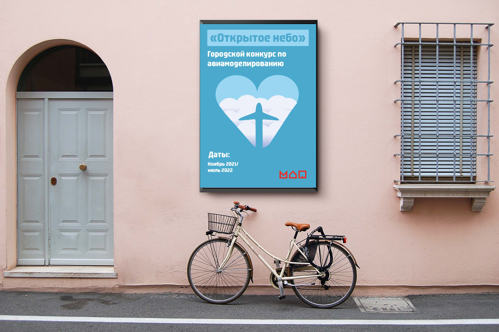


.png)
.png)
.png) 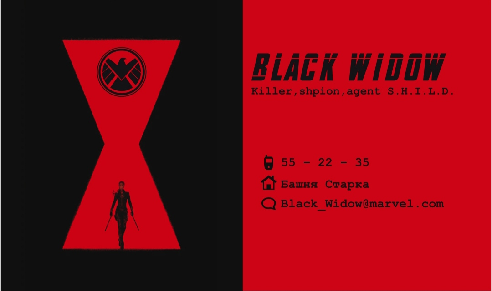
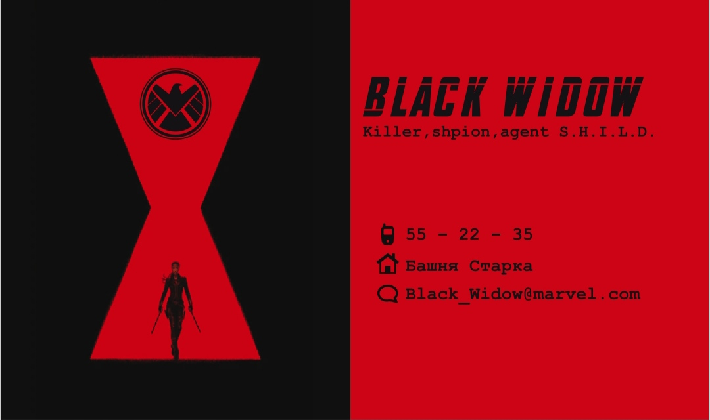
Обучение и кружки
В свободное время от школы, я занимаюсь в Московском дворце пионеров на "Воробьевых горах", по 19 разным направлениям. Центр технического образования 3D моделирование Web-дизайн Занимательная математика Компьютерная графика Основы программирования «Питон старт» Основы управления и эксплуатации багги и карта Разработка мобильных приложений Робототехника и проектное обучение Центр художественного образования "Архитектурный дизайн" "Изобразительное искусство. Мастерская художника" "Объемно-пространственное моделирование" Флористика и фитодизайн Объемная резьба по дереву Центр экологического образования Вечерняя биолого-химическая школа: популярная биохимия, физиология и биотехно Занимательная химия Центр экологического образования Вечерняя биолого-химическая школа: популярная биохимия, физиология и биотехно Занимательная химия Академия полезных действий PRO: язык. Английский 3-й уровень PRO: язык. Испанский 3-й уровень PRO: язык. Французский. 2-й уровень
.jpeg)


.jpeg)
Артек - страна детства
Каждый год год, я ставлю себе цель - поехать в Артек. Для меня Артек - это волшебное место наполненое дружбой, поддержкой и новыми знакомствами! В Этом замечательном месте я была уже два раза ( 19.10.2022 года поеду третий раз ). И не перестану им, восхищаться и приезжать из года в год! Артек очень мотивирует проводить свой год в работе, т.к. как поработал так и отдахнул! В заключении хочу написать, что для Артка много слов не надо! Надо самим прочувствовать это волшебство!